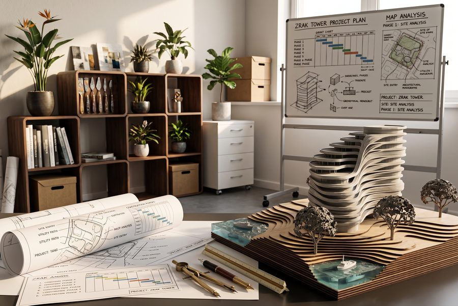

Usluge /
Arhitektura, dizajn enterijera i vizualizacija
Pružamo usluge arhitekture, dizajna enterijera i vizualizacije, od prve ideje do završenog objekta. Jedan studio vodi projekat kroz dizajn, BIM koordinaciju, dozvole i nadzor, pa se ništa ne gubi između faza. Van Srbije radimo zajedno sa vašim lokalnim arhitektom.

Usluge /
Usluge
01Idejno rešenje i konceptAnaliza lokacije / Prostorni program / Volumen i oblik
Vaš zadatak pretvaramo u jasnu prostornu strategiju. Ova faza obuhvata analizu lokacije, pregled urbanističkih uslova i prva arhitektonska rešenja, sa fokusom na raspored, volumen i odnose među prostorima.
Analiza lokacije
Procena topografije, uslova okoline i urbanističkih propisa, kao osnova za najbolju strategiju projekta.
Prostorni program
Definisanje funkcionalnih zahteva i efikasnih rasporeda za sve prostore projekta.
Volumen i oblik
Rani 3D modeli kojima istražujemo odnose volumena i utvrđujemo arhitektonski identitet.
02Razrada projekta i BIM modelovanjeNapredna 3D integracija / Specifikacija materijala / Rano otkrivanje kolizija
Projekat razrađujemo u informacionom modelu zgrade. Biraju se materijali, konstrukcija i instalacije se usklađuju u modelu, a kolizije se rešavaju na ekranu, pre nego što stignu na gradilište.
Napredna 3D integracija
Pametan BIM model usklađuje arhitekturu, konstrukciju i instalacije.
Specifikacija materijala
Izbor završnih obrada i sistema koji ispunjavaju estetske ciljeve, a poštuju konstruktivna i budžetska ograničenja.
Rano otkrivanje kolizija
Prepoznavanje i rešavanje sukoba između struka pre početka izgradnje.
03Arhitektonska vizualizacijaIdejne vizualizacije / Studije materijala i enterijera / Prezentacione slike
Fotorealistične slike, od prvih studija volumena do konačnog izbora materijala. Vizualizacije se prave iz istog BIM modela kao i crteži, pa je ono što odobrite upravo ono što se dokumentuje.
Idejne vizualizacije
Rane slike kojima proveravamo volumen, svetlost i atmosferu pre nego što se rešenje utvrdi.
Studije materijala i enterijera
Detaljni prikazi obrada, nameštaja i osvetljenja, da se odluke donose sa sigurnošću.
Prezentacione slike
Slike visoke rezolucije za investitore, prijave i prodaju.
04Tehnička dokumentacija i inženjeringDetaljni arhitektonski crteži / Detalji po meri / Dokumentacija za dozvole
Izrađujemo detaljnu tehničku dokumentaciju: crteže, specifikacije i tabele po kojima izvođači mogu da daju cenu i grade. Pažljiva razrada znači tačnije ponude, manje izmena na gradilištu i dokumentaciju koja ispunjava važeće propise.
Detaljni arhitektonski crteži
Precizne osnove, preseci i izgledi potrebni za tačne ponude izvođača.
Detalji po meri
Specijalni tehnički crteži za složene konstruktivne spojeve, termički omotač i hidroizolaciju.
Dokumentacija za dozvole
Priprema dokumentacije koja ispunjava važeće propise i podržava postupak izdavanja dozvola, u Srbiji preko sistema CEOP.
05Arhitektonski nadzorObilasci gradilišta / Pregled dokumentacije izvođača / Tehnička pitanja i izmene
Nakon izdavanja građevinske dozvole klijenti nas mogu angažovati za nadzor nad izgradnjom naših projekata. Obilazimo gradilište, pregledamo dokumentaciju izvođača i odgovaramo na tehnička pitanja, da se objekat izgradi onako kako je projektovan.
Obilasci gradilišta
Redovni obilasci radi provere da li se radovi izvode prema odobrenom projektu i dokumentaciji.
Pregled dokumentacije izvođača
Provera radioničkih crteža i uzoraka materijala u odnosu na specifikaciju.
Tehnička pitanja i izmene
Odgovori na pitanja izvođača i procena predloženih izmena u odnosu na odobreni projekat.
06Enterijer i detalji po meriStolarija po meri / Dizajn osvetljenja / Izbor materijala
Arhitektonsku ideju prenosimo u enterijer: stolarija po meri, osvetljenje i izbor materijala, da zgrada i njen enterijer deluju kao jedna celina.
Stolarija po meri
Projektovanje ormara i ugradnih elemenata prilagođenih geometriji svakog prostora.
Dizajn osvetljenja
Integrisani planovi osvetljenja koji podržavaju način korišćenja svakog prostora.
Izbor materijala
Biranje završnih obrada, opreme i okova koji slede arhitektonsku ideju.
07Studije izvodljivosti i master planiranjeProcena potencijala lokacije / Analiza iskorišćenosti i gustine / Dugoročno fazno planiranje
Za razvojne projekte velikih razmera pružamo strateško master planiranje i analizu izvodljivosti. Procenjujemo potencijal lokacije, razmatramo regulatorna ograničenja i razvijamo dugoročne prostorne strategije koje povećavaju vrednost zemljišta i vode buduće faze razvoja.
Procena potencijala lokacije
Procena fizičkih ograničenja i regulatornog okvira radi utvrđivanja maksimalnog kapaciteta parcele.
Analiza iskorišćenosti i gustine
Obračun površina za gradnju i optimizacija prostorne raspodele, da projekat bude finansijski održiv.
Dugoročno fazno planiranje
Raspodela velikih razvoja na logične etape radi optimizacije ulaganja i upravljanja rizikom.
Naš pristup
Projektovano da bude izgrađeno
Svaki koncept se od prve skice proverava u odnosu na konstrukciju, materijale i način građenja, da projekat preživi susret sa gradilištem.
BIM od prvog dana
Jedan Revit model daje osnove, preseke, specifikacije i vizualizacije. Kolizije sa konstrukcijom i instalacijama otkrivaju se na ekranu, a ne na gradilištu.
Svest o troškovima
Materijale i rasporede biramo imajući budžet u vidu i rano kažemo kada će neka odluka koštati više.
Prvo kontekst
Klima, topografija i lokalna graditeljska kultura oblikuju svaki projekat. Nijedan ne počinje od istog šablona.
Proces /
Kako radimo
Prvi razgovor
Razgovaramo o lokaciji, zadatku, budžetu i rokovima i proveravamo planska dokumenta koja važe za parcelu.
Ponuda
Pisani obim usluga, faze i cena, da znate šta dobijate u svakoj etapi.
Koncept
Volumeni, rasporedi i prve vizualizacije, usavršavani sa vama dok se pravac ne usvoji.
Projekat i BIM
Usklađen Revit model sa konstrukcijom i instalacijama, specifikacijom materijala i kontrolom troškova.
Dozvole i dokumentacija
Dokumentacija za postupak izdavanja dozvola, za tender izvođača i za izgradnju.
Na gradilištu
Arhitektonski nadzor, pitanja izvođača i kontrola izmena do primopredaje.
Pitanja /
Najčešća pitanja
01Da li radite sa klijentima van Srbije?
Da. Idejno rešenje, dizajn enterijera i arhitektonska vizualizacija mogu se raditi potpuno na daljinu, uz video sastanke na engleskom jeziku. Za objekat van Srbije sarađujemo sa vašim lokalnim arhitektom koji vodi dozvolu u toj državi. Za projekte u Srbiji vodimo ceo postupak.
02Šta vam je potrebno da biste počeli projekat?
Lokacija parcele ili nekretnine, dokumenta koja već imate, kratak opis onoga što vam treba, okvirni budžet i željeni rok. Ako nemate sve, pošaljite ono što imate, pa ćemo zajedno dopuniti zadatak.
03Kako se dogovara cena?
Pre početka rada dobijate pisanu ponudu sa obimom usluga, fazama i cenom svake faze, tako da u svakom trenutku znate šta dobijate i koliko košta.
04Koliko traje izrada projekta?
Zavisi od veličine i složenosti projekta i od postupka izdavanja dozvola. Koncept obično traje nekoliko nedelja, a kompletna dokumentacija nekoliko meseci. Dinamiku dajemo u ponudi i ažuriramo je kako projekat odmiče.
05Šta je CEOP i kako utiče na moj projekat?
CEOP je centralni sistem za elektronsko podnošenje zahteva za građevinske dozvole u Srbiji. Dobro poznajemo propise i postupak, pa put do dozvole planiramo od prve skice i pripremamo dokumentaciju koja ispunjava uslove.
06Da li vršite nadzor nad izgradnjom?
Da, na našim projektima. Nakon dobijanja građevinske dozvole klijenti nas mogu angažovati za arhitektonski nadzor: obilaske gradilišta, pregled dokumentacije izvođača i odgovore na tehnička pitanja. Mi smo arhitekte, a ne izvođač, pa ne gradimo.
07Da li radite samo enterijere?
Da, i to. Stanovi, restorani, kafei i klinike redovan su deo našeg rada. Projektujemo raspored, stolariju po meri, osvetljenje i materijale, a pripremamo crteže i vizualizacije koje izvođač može da koristi.
08Koje softvere i način rada koristite?
Radimo u programu Autodesk Revit. Jedan BIM model daje osnove, preseke, specifikacije i vizualizacije, a usklađen je sa konstrukcijom i instalacijama, pa se kolizije otkrivaju na ekranu, pre izgradnje.